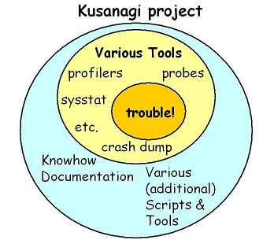

|  |
Kusanagi is a collection of tools intended for trouble shooting
including both user space and kernel space tools.
Granted that there are many very useful tools applicable for our trouble shooting activities, but often those tools are inconvenient, have restrictions, difficult to understand their outputs or extract conclusive results etc. From another point of view, often we want to have a collected knowledge base to exploit those convenient tools. The resources of Kusanagi Project are intended for those kind of needs. Tools and documents here cover the light blue region of the left picture, and they would help you to analyze system behavior, catch evidences for your guesses or reproduce troubles etc. |
GPL2(tools), FDL(documents)
Last modified: Tue May 29 15:00:14 JST 2007